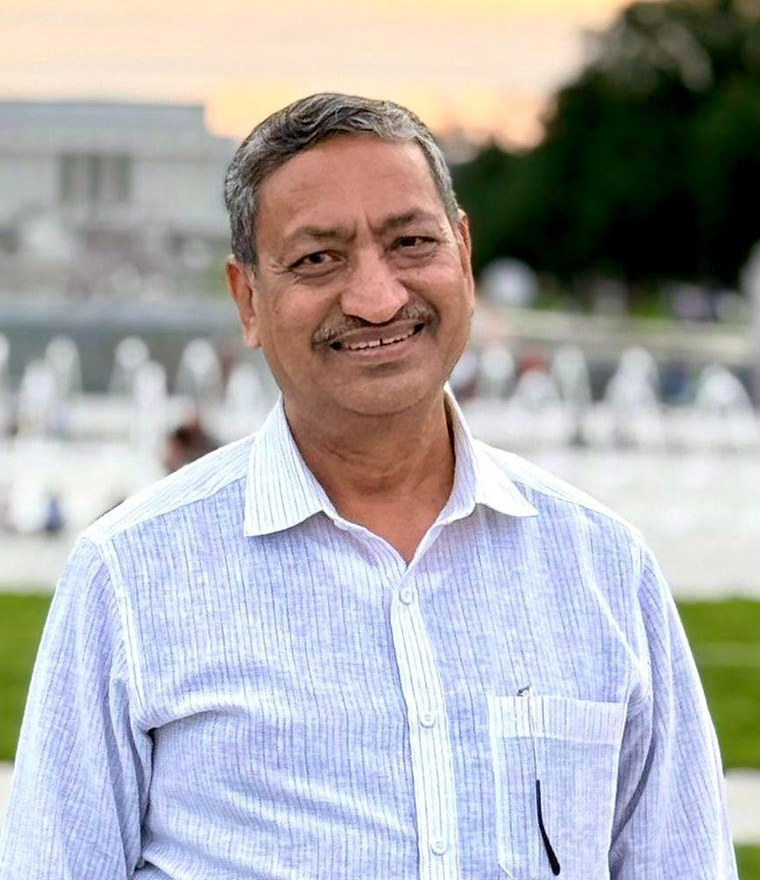

Dr. Janardan Singh Chauhan — Senior Professor of Civil Engineering and former Director, Samrat Ashok Technological Institute (SATI), Vidisha — has spent four decades answering one stubborn question: how do you build well for people of modest means?

Janardan Singh Chauhan began as a site engineer. Seven years with a construction firm in Vidisha — setting foundations, managing works, learning what materials actually cost and how buildings actually fail — preceded every degree and title that followed. That grounding shaped an unusual academic career, one that has moved fluidly between the laboratory, the classroom, the construction site, and the director's office. He joined SATI in 1992 to anchor its newly founded, HUDCO-approved building technology centre, and stayed to lead the Civil Engineering department for fourteen years, then the institute itself.
As Director (2016–2022) he headed one of India's oldest engineering institutions — established in 1960, its foundation stone laid by Prime Minister Jawaharlal Nehru, its alumni including Nobel Peace Laureate Kailash Satyarthi. During his tenure the institute was selected under the World Bank–assisted TEQIP-III excellence programme. His research spans affordable housing and building materials, foundation engineering, highways, construction management and trenchless technology, with recent interest in green hydrogen — three patents, thirteen doctoral theses, and more than twenty-three sponsored projects along the way.
Low-cost and waste-derived materials — fly ash, industrial by-products, stabilised earth, ferrocement, geopolymer cements — engineered for affordable construction.
Thermal performance of housing, climate-responsive planning, green construction concepts; doctoral work compared experimental and conventional housing techniques.
Foundations under vibratory loading and soil–structure interaction, with parallel work in computational mechanics of materials and structural components.
Pavement quality and durability, rural road design under PMGSY, and GPS and geoinformatics applied to infrastructure delivery.
No-dig methods for subsurface infrastructure; coordinator of India's National Habitat Centre on Subsurface & Trenchless Technology (AICTE).
Earthquake-resistant construction and structural retrofitting of existing buildings; coordinator of India's National Retrofitting Clinic (AICTE).
Dr. Chauhan welcomes correspondence on research collaboration, doctoral examination, speaking engagements, and academic appointments.